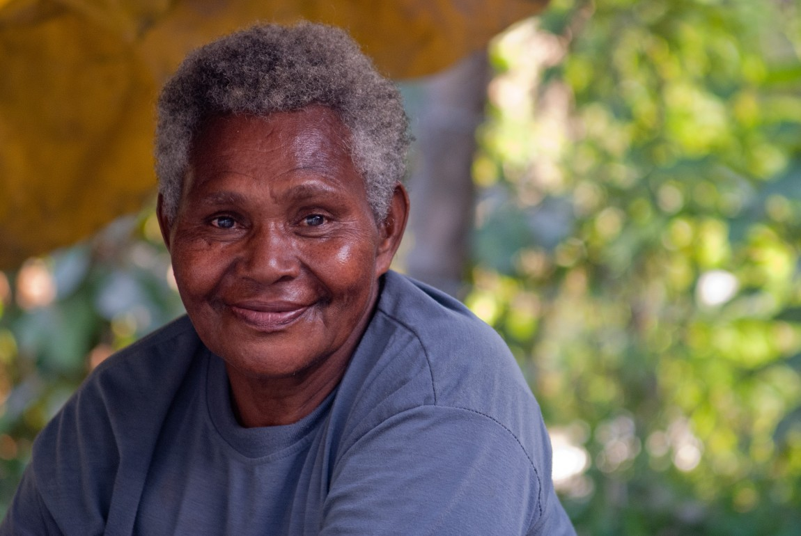

Description of Target Audience
Who:People of the communiteis surrounding eatern Idaho.
Age: 14 to 100
Income: Income levels will typicaly be between $60,000 and above annually.
Motivation:Find out more information regaurding the communities and weather of Preston/Soda Springs/Fish Haven.
Personsas:
Persona 1

Henry, age 45, resident of Preston, Idaho, Owner of tax buisness.
Goals for using the site: To plan a hunting day with his teenage sons in Soda Springs, tomorrow.
Technology: Henry uses his ipad for most of his internet use.
Social: Stays off of social media and enjoys listening to the news through the Fox News App. Is an active member of the community church.
Quote:"There is something about taking time off and spending it lost in the woods of our beautiful surroundings."
Persona 1
Janice, age 71, resident of Jackson Hole, Wyoming, retired.
Goals for using the site: To find information about her upcoming long distance biking trip through eatern Idaho.
Technology: Janice mostly uses her old 2007 desktop computer her nephew put in for her before he moved away. On ocation she will access the internet through her iPhone 6.
Social: Janice loves facebook, and calling her granddaughters on facetime. She is also on the Board of Directors in town.
Quote:"I love being involoved with the community and visiting places with that same small town feel."
Senerios
What is the current weather like in Preston/Soda Springs/Fish Haven?
This will be addressed by having a overveiw of the weather on the home page. Then on the specific location's page providing images, descriptions and announcments regaurding the weather.
I am travling from out of state to Idaho, do I want to spend time in Preston/Soda Springs/Fish Haven?
This will be addressed by including images of the beautiful state and locations on the main page. Also we will have a welcoming vibe to allow viewers to have a positive peak into the daily view of south east Idaho.
Is there currently a fire restriction?
This will be addressed by a detailed list of all current restrictions for fire on each cities page.
I want to go camping, will the weather be clear next weekend?
This will be addressed by a weather synopsis for the upcoming 10 days. Additional information on uv index, allergies and barometric pressure
Is there a current severe weather warning?
This will be addressed by a banner at the top of each cities page with any sever weather warnings.